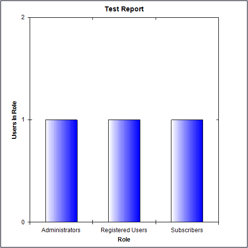
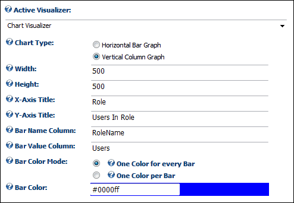

Configuring the Chart Visualizer Settings
The Chart Visualizer option on the Active Visualizer displays a simple horizontal bar or vertical column chart from the data retrieved by your query. Note: The Chart Visualizer is not included with the Report module; however it can be installed and configured by your Host.

The Chart Visualizer
Here's how to set the Chart Visualizer settings on the Active Visualizer:
- At Active Visualizer, select Chart Visualizer. The following additional setting are displayed:
- At Chart Type, select the type of chart that will be rendered from these options:
- Select Horizontal Bar Chart to choose a Bar Chart with bars stretching from left to right.
- Select Vertical Column Chart to choose a Bar Chart with bars stretching from bottom to top. Note: The X-Axis Title and Y-Axis Title settings still refer to the Horizontal and Vertical axes (respectively), no matter what value this setting has.
- In the Width text box, enter the width of the produced chart in pixels. E.g. 500
- In the Height text box, enter the width of the produced chart in pixels. E.g. 500
- In the X-Axis Title text box, enter the title to be displayed along the X-Axis (Horizontal) of the chart.
- In the Y-Axis Title text box, enter the title to be displayed along the Y-Axis (Vertical) of the chart.
- In the Bar Name Column text box, enter the name of the column in the produced dataset that will be used as the name of each bar in the chart.
- In the Bar Value Column text box, enter the name of the column in the produced dataset that will be used to determine the height of each bar in the chart
- At Bar Color Mode, select way in which the color of each bar will be determined from these options:
- Select One Color for every Bar to set every bar as same color.
- In the Bar Color text box, enter the color to use for the bars in the chart
- Select One Color per Bar to set the color of each bar as given by a column in the dataset.
- In the Bar Color Column text box, enter the name of the column containing the color for each bar in the chart.

-
Click the Update button.
Tip: In its current version, the Chart Visualizer is limited to displaying this form of Bar Chart. It is limited to displaying the value of one column as the height of the bar. The Chart Visualizer is not installed by default. After installing the module, the installation packages can be found in the DesktopModules/Reports/Install/Visualizers folder. See the section on installing the Chart Visualizer for details. See Managing Reports Module Add-Ins for information on installing Visualizers and Data Sources.